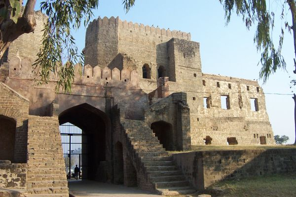
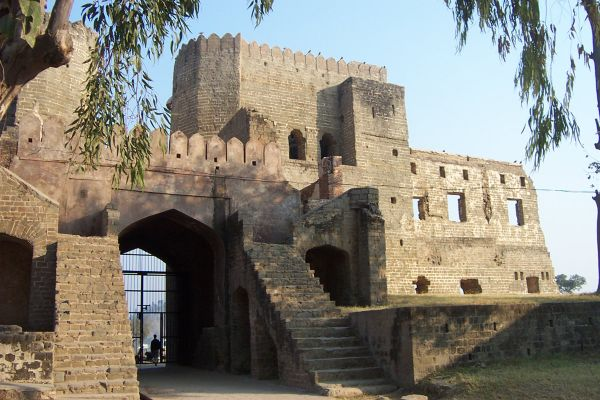
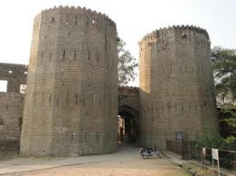
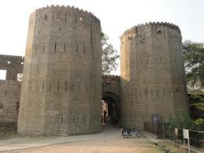
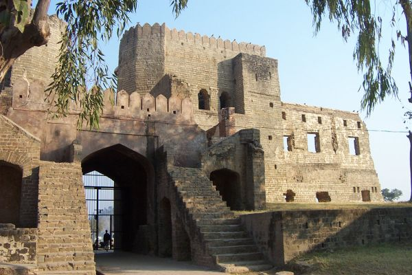
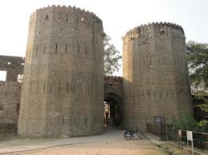

WELCOME TO
KANGRA VALLEY
HISTORY
Before 1947, Nurpur was a princely state ruled by the Pathania clan of Rajputs. The Pathania Clan (or Tanwar clan of Chandravanshi Rajputs) had ruled here for more than eight centuries. Nurpur was known as Dhameri until a visit from Noorjehan, the Queen of Emperor Nuruddin Salim Jahangir (1569–1627) of the Mughal Dynasty. The queen was so impressed by the natural beauty of the town, that she decided to construct her palace here. This posed a problem for then local ruler Raja Jagat Singh Pathania he did not want his freedom to be curtailed by the Mughal domination and politics. So, he perpetrated the story that the climate of the place was not good and caused a disease Goiter, which was at that time very common among locals. Horrified, the queen dropped the idea of constructing her palace, but the name of the town was changed to Nurpur in 1622, by the Raja Jagat Singh Pathania to commemorate this visit of Begum Nur Jahan who had instantly fallen in love with this place.

 


 

